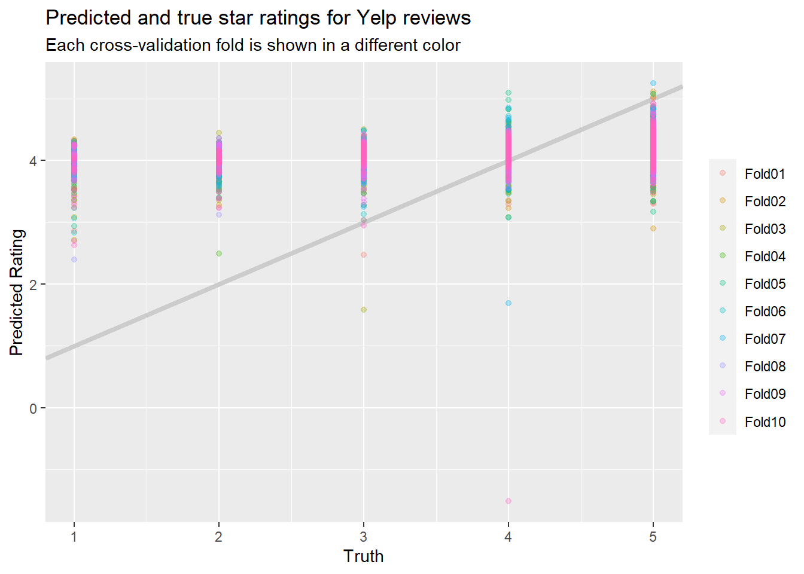
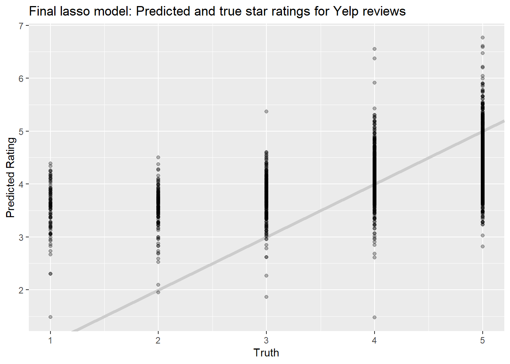
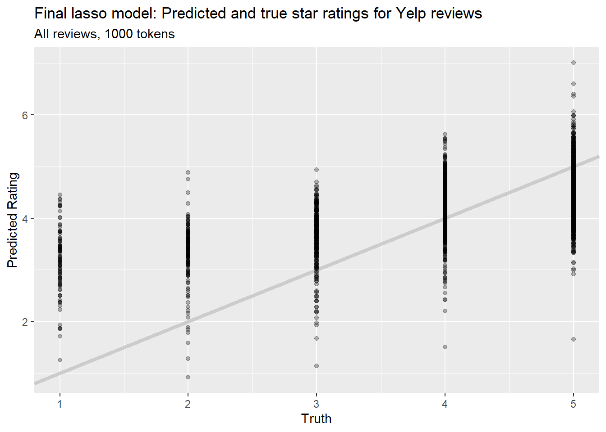
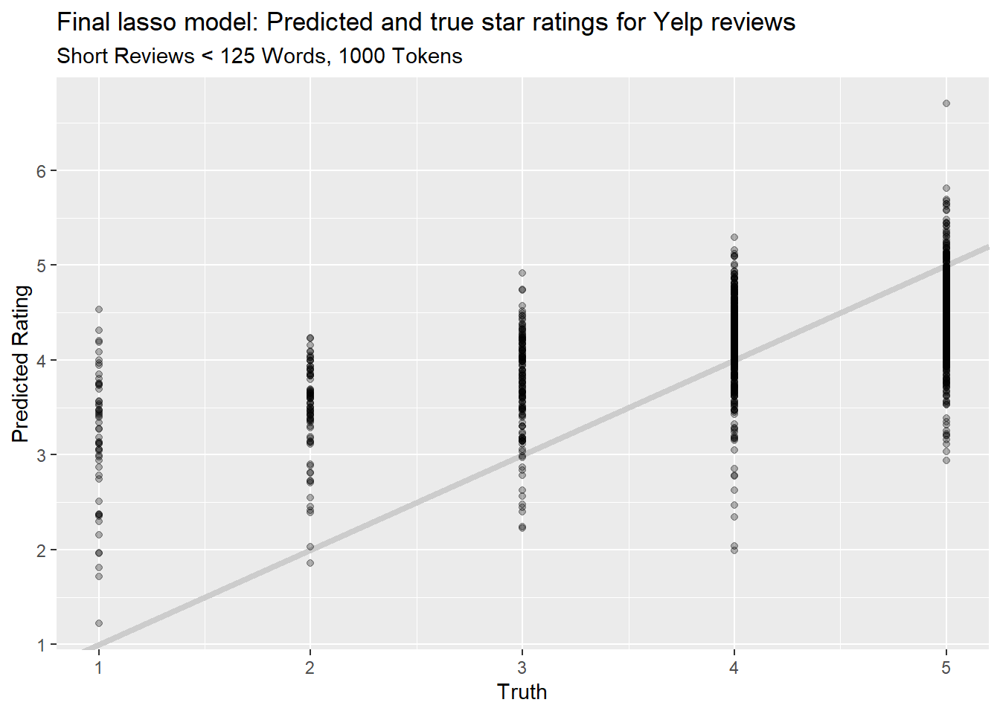
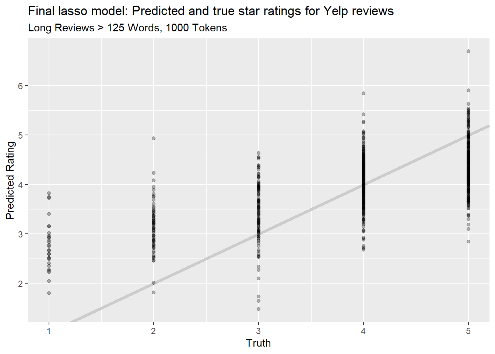
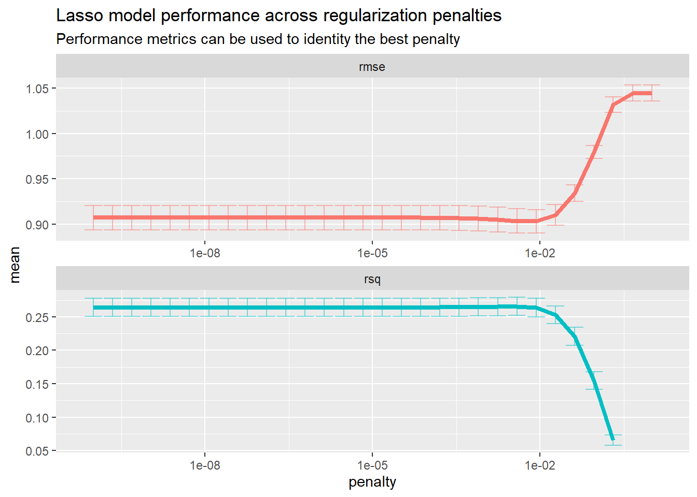
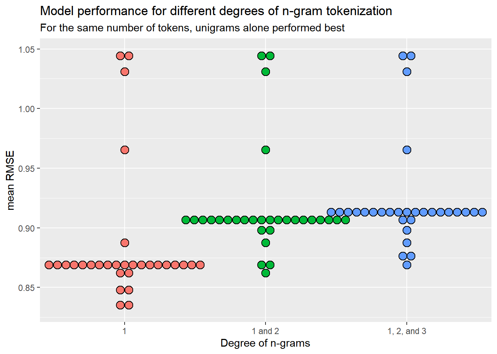
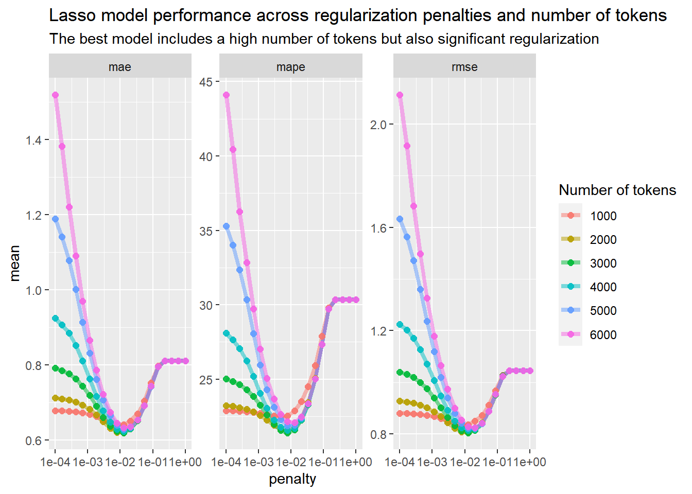
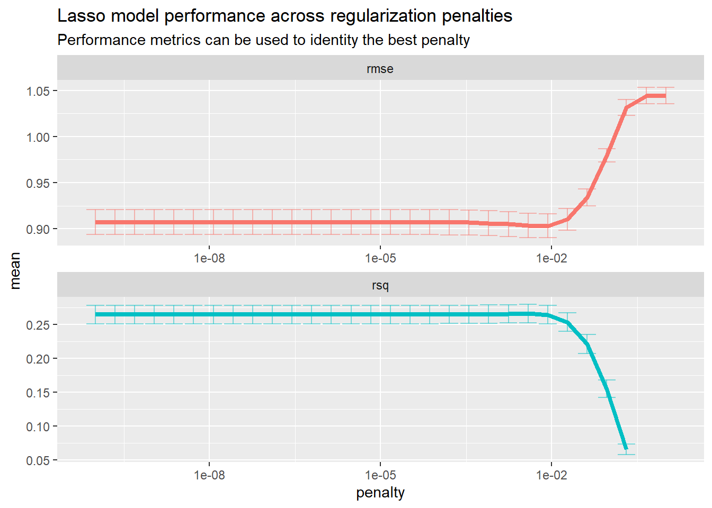

Chapter 5 A First LASSO Attempt
5.1 Introduction
This analysis will use regression methods to attemp to predict star ratings from the text and/or titles of the reviews in our Yelp, Goodreads, and MEC datasets. My methods will closely follow those given in Chapter 6 of Supervised Machine Learning for Text Analysis in R (SMLTAR) by Silge and Hvitfeldt (2020). In the first case I will work through an example in detail to describe the steps (and to learn them!!), and in later sections I will move more quickly to try some different variations on the analysis.
I’m going to use the tidymodels framework as much as possible, both because it’s the approach used in SMLTAR and because I’m a fan of the Tidyverse approach to software design and analysis.
5.2 A First Regression: Yelp Data
I will begin with the Yelp data because we have a lot of it, and because based on our EDA it seemed to be “cleaner” than the Goodreads data which had a lot of duplicate posts, spam posts, plot summaries, etc.
reviews_yelp <- read_csv("../tests/data/ottawa_yelp_reviews.csv") %>%
mutate(date = lubridate::mdy(date)) %>%
rename(text = comment,
rating_num = rating)## Parsed with column specification:
## cols(
## business = col_character(),
## name = col_character(),
## date = col_character(),
## comment = col_character(),
## rating = col_double(),
## url = col_character()
## )| business | name | date | text | rating_num | url |
|---|---|---|---|---|---|
| La Squadra | Alain G. | 2017-08-21 | Confession: I am a foodie and I am a restaurant trained amateur Chef.<br>Been wanting to try this place for a while. And for Italian restaurants I always try their Bolonaise first. If you mess that up, I don&#39;t want to see what you doi to veal!<br><br>This place was AWESOME. I made sure to go on a Monday at Lunch. I was their first customer of the day. The Spaghetti Bolonaise was excellent. Pasta nice and al dente. The Sauce was perfect: nice and meaty but fine with small pièces of vegetable and the spices were present and well balanced. The bred was fresh Italian focaccia bread with hints of garlic!<br><br>Good wine by the glass and I topped it off with their Tiramisu and a nice expresso lungo!<br><br>What a treat! | 5 | http://www.yelp.ca/biz/la-squadra-gatineau |
| La Squadra | Amelia J. | 2018-12-19 | I came here for a Christmas lunch with coworkers and we tried the set Christmas menu (appetizer + main).<br><br>Overall impression is that this restaurant is a really cozy, relaxed, elegant place to chat, but the food is a hit or miss, depending on what you choose. I would give 3.5 stars if I could as it&#39;s better than average but not mind-blowing. Most of the effort seemed to go to the interior design, although service is very friendly/chatty!<br><br>I got the penne pasta with a variety of veggies and sausage, which the server said would be very flavorful and strong-tasting. It was indeed strong and slightly spicy, which was yummy. However, it lacked depth of flavour and was something I could make at home. It was slightly better than your average pasta dish.<br><br>A colleague who sat beside me decided to get the pork shank osso bucco, and we tried each others&#39; plates. This was probably the favourite dish of the table (others also got vegetarian pasta or the white fish, which they said lacked flavour and was bland). The pork shank was surprisingly very tender, flavorful but not too strong, and the sauce was delicious as it was steeped in flavour from the braised pork! I think a thinner pasta would have been better and not the tagliatelle pasta, as it was difficult to eat since the sauce was very thin. Perhaps angel hair or some other thin pasta would be better. <br><br>Half the table got the tiramisu as dessert, and the other half was too full; at least portion sizes are decent! The tiramisu, unfortunately, tasted more like cheesecake, which was the opinion of the table. Although presentation was pretty as it was in a glass, the pieces of ladyfingers sticking out didn&#39;t add much to flavour (and most people didn&#39;t eat them since they are dry). The fruits were a nice touch, but &#34;authentic&#34; tiramisu does not have any other toppings. <br><br>I wouldn&#39;t come back for the food necessarily, but would come for work functions or just to relax with a drink, as the environment itself is really beautiful and makes for good conversation. | 4 | http://www.yelp.ca/biz/la-squadra-gatineau |
| La Squadra | Michael C. | 2017-07-03 | Beautiful venue, great service and incredible food. Try Squadra pasta and pizza…and the Arancini may be the best I ever tasted. | 5 | http://www.yelp.ca/biz/la-squadra-gatineau |
| La Squadra | Cee Y. | 2019-03-30 | My husband and I stopped into this place as per a recommendation by Yelp. We had a fantastic time and our server Rene was absolutely lovely. I am not Francophone and Rene was gracious enough to make me feel at home and teach me the proper pronounciation for quail…which by the way was amazing! The husband had the Salmon with orzo which he really enjoyed as well. The decor was nice and the atmosphere was really pleasant. Would definitely go again as well as recommend to others | 5 | http://www.yelp.ca/biz/la-squadra-gatineau |
| La Squadra | Luc S. | 2018-03-04 | Best Italian restaurant in Gatineau ! The food is authentic and fresh with good wine recommendation. Ambiance is nice and modern. A must in Gatineau. Probably in my top 5 for the region !!! | 5 | http://www.yelp.ca/biz/la-squadra-gatineau |
| Kallisto Greek Restaurant | Amster S. | 2020-04-18 | I&#39;ve been here twice. Once with my work friends and second with my family. I will come back for sure post pandemic. It is very clean and the food is super amazing. I cannot wait to return . A nice little gem in Blossom Park. | 5 | http://www.yelp.ca/biz/kallisto-greek-restaurant-ottawa |
| Kallisto Greek Restaurant | Reema D. | 2020-01-12 | Waitress was pretty slow. Didn&#39;t take our dinner orders until after we finished apps and she cleared the table. Food was great. I had the small Greek salad, saganaki, and bruschetta. A friend had the fattoush salad. We both enjoyed our salads and the bruschetta was honestly one of the best I&#39;ve had. The bread is nice and fresh. Definitely get that. Saganaki was not very good, I probably wouldn&#39;t order it again. It wasn&#39;t cooked enough to melt. | 4 | http://www.yelp.ca/biz/kallisto-greek-restaurant-ottawa |
| Kallisto Greek Restaurant | Jennifer P. | 2018-05-21 | My husband and I had dinner here recently and overall it was very good 3.75 stars, rounded up to 4.<br><br>This Greek restaurant is in Blossom Park, an area of town that we rarely go to (actually, it was my first time in that neighbourhood). My husband had forgotten some of his belongings at one of his work sites and needed the items before he was scheduled to go back there. I said, hey if you&#39;re going to go all the way there, let&#39;s see if there are any good restaurants in the area. You know me, any excuse to try a new (to me) restaurant in a new (to me) area, lol. A Yelp search led me to Kallisto&#39;s. <br><br>There is a restaurant side and an express side for takeout. We dined in, in the restaurant side. I noticed that the prices are about $1 less for takeout.<br><br>I got the Shrimp Salad ($20) and my husband got the Lamb Souvlaki Dinner ($22). <br><br>My salad had romaine lettuce, hearts of palm, artichokes, tomatoes, and cucumbers. I asked for the dressing (a thick and creamy peppercorn dressing) on the side, and it arrived as requested. They gave me sooooo much dressing. I used about a twelfth of what they gave me. However, I didn&#39;t finish my salad and had them pack up the rest and now I have dressing to use for the next few weeks, lol!<br><br>The salad was good, but I think a crunchy element would have improved the salad, since I love lots of different textures in my salad.<br><br>My husband enjoyed his meal and while I didn&#39;t have any, it looked really good. I think you get more bang for your buck with a souvlaki dinner than a dinner salad. His dinner came with a sizeable side salad (romaine lettuce, red cabbage, carrots, tomatoes, cucumbers and black olives), potatoes, rice, grilled vegetables (1 slice of zucchini and a piece of bell pepper) and 2 skewers of lamb. <br><br>Service was friendly. The place was neat and clean looking.<br><br>The restaurant is in the same strip mall as Giant Tiger, Farm Boy, Dollar Tree, and Kardish. Lots of free parking. | 4 | http://www.yelp.ca/biz/kallisto-greek-restaurant-ottawa |
| Kallisto Greek Restaurant | Teena D. | 2018-02-07 | I had lunch today at Kallisto Greek Restaurant.<br><br>I love chicken souvlaki and that&#39;s what I ordered without the salad). I&#39;ve had it many times over the years and this was just okay. The rice and potatoes are usually lemony and these seemed like diner rice and potatoes rather than Greek rice and potatoes. The chicken was good but there wasn&#39;t a lot of it for $14. The tzatziki didn&#39;t have a lot of kick and was rather bland. I couldn&#39;t taste any cucumber and detected maybe a bit of mint?<br><br>Vera was the server and she was friendly. | 2 | http://www.yelp.ca/biz/kallisto-greek-restaurant-ottawa |
| Kallisto Greek Restaurant | Janie M. | 2019-06-26 | Find there&#39;s always warm and friendly service. Best Greek food in Ottawa! My son, daughter and I have tasted many delicious foods. <br><br>My son can&#39;t get enough of their dolmas, my daughter is the kbobs and I try something new I love every time. <br><br>Service is impeccable! | 5 | http://www.yelp.ca/biz/kallisto-greek-restaurant-ottawa |
5.2.1 Splitting the data
First we will split our data into a training set and a testing set. This is a standard practice, wherein we build a model using the training data but set aside some other data so we can test it later. Otherwise we might have concerns about overfitting or model validity.
I’m setting the value strata = "rating_num" to ensure that our random sampling has about the same distribution of star ratings as our full population–see the documentation for initial_split().
set.seed(1234)
yelp_split <- reviews_yelp %>%
initial_split(strata = "rating_num")
yelp_train <- yelp_split %>%
training()
yelp_test <- yelp_split %>%
testing()The next step is to define our preprocessing steps: the stuff we’ll do to the text before we put it into a regression model. In the tidymodels approach we do this by creating a “recipe” objects and then adding a number of steps to it. We modify the object by using the pipe operator to add a bunch of steps to it using verb functions. This makes it easy to read the step-by-step process and understand what’s going on.
I’ll note, though, that when I follow SMLTAR’s guide the recipe still includes explicit references to the dataset we’re analyzing, so it’s not a completely generic object that could be applied to other datasets: we would need to make other recipes for MEC and Goodreads. There may be more advanced ways to create generic recipes that can be reused.
Here, following SMLTAR, we will use a recipe with the following steps:
- Tokenizing the text, which means breaking it down into constituent bits (words here),
- Filtering the tokens based on frequency, taking only the 250 most-common tokens, (NOTE this is not many tokens!!)
- TFIDF, or “term frequency inverse document frequency,” which weights each token based on both how frequent it is and on how common it is across documents (see
step_tfidf()’s help page for details), and then - Normalizing so our lasso regression will work properly.
num_tokens <- 250
yelp_rec <- recipe(rating_num ~ text, data = yelp_train) %>%
step_tokenize(text) %>%
step_tokenfilter(text, max_tokens = num_tokens) %>%
step_tfidf(text) %>%
step_normalize(all_predictors())
rm(num_tokens)
yelp_rec## Data Recipe
##
## Inputs:
##
## role #variables
## outcome 1
## predictor 1
##
## Operations:
##
## Tokenization for text
## Text filtering for text
## Term frequency-inverse document frequency with text
## Centering and scaling for all_predictors()Next, Silge and Hvitfeldt (2020) suggest we create a workflow() object that combines preprocessing steps and models.
## == Workflow ====================================================================
## Preprocessor: Recipe
## Model: None
##
## -- Preprocessor ----------------------------------------------------------------
## 4 Recipe Steps
##
## * step_tokenize()
## * step_tokenfilter()
## * step_tfidf()
## * step_normalize()We now define a lasso regression model using parsnip. My understanding is that this acts as a “tidy wrapper” around other functions/packages, in this case glmnet, that lets you use them in a tidy way. I believe it can also make it easier to swap out models or parameters without having to completely rewrite your codebase.
Note that penalty = 0.1 is arbitrary and we’ll look into that parameter more closely later.
lasso_model <- parsnip::linear_reg(penalty = 0.1, mixture = 1) %>%
set_mode("regression") %>%
set_engine("glmnet")
lasso_model## Linear Regression Model Specification (regression)
##
## Main Arguments:
## penalty = 0.1
## mixture = 1
##
## Computational engine: glmnetNow we add the lasso model to the workflow and run the model. This takes about 9 seconds on my machine using only 250 tokens. (I expect we’ll need to use more to get a good result.)
## 8.82 sec elapsedWe can look at the terms with the highest coefficients in the model:
## Loading required package: Matrix##
## Attaching package: 'Matrix'## The following objects are masked from 'package:tidyr':
##
## expand, pack, unpack## Loaded glmnet 4.0-2## # A tibble: 251 x 3
## term estimate penalty
## <chr> <dbl> <dbl>
## 1 (Intercept) 4.16 0.1
## 2 tfidf_text_amazing 0.0490 0.1
## 3 tfidf_text_delicious 0.0395 0.1
## 4 tfidf_text_great 0.0379 0.1
## 5 tfidf_text_best 0.0307 0.1
## 6 tfidf_text_and 0.00624 0.1
## 7 tfidf_text_2 0 0.1
## 8 tfidf_text_3 0 0.1
## 9 tfidf_text_34 0 0.1
## 10 tfidf_text_39 0 0.1
## # ... with 241 more rowsThis already doesn’t look too promising; only 5 terms have positive coefficients, and the intercept is 4.16. But let’s see how it goes.
5.2.2 Evaluating the first model
Following Silge and Hvitfeldt (2020), we’ll evaluate the model using cross-fold validation, which is a way of trying to squeeze as much validation as you can out of a finite dataset. We will resample our training dataset to create 10 new datasets, and in each one we’ll use 90% for training and 10% for assessment.
set.seed(1234)
yelp_folds <- vfold_cv(yelp_train)
lasso_rs <- fit_resamples(
yelp_wf %>% add_model(lasso_model),
yelp_folds,
control = control_resamples(save_pred = TRUE)
)
tic()
lasso_rs## # Resampling results
## # 10-fold cross-validation
## # A tibble: 10 x 5
## splits id .metrics .notes .predictions
## <list> <chr> <list> <list> <list>
## 1 <split [6.3K/706]> Fold01 <tibble [2 x 3]> <tibble [0 x 1]> <tibble [706 x 3]>
## 2 <split [6.3K/706]> Fold02 <tibble [2 x 3]> <tibble [0 x 1]> <tibble [706 x 3]>
## 3 <split [6.3K/706]> Fold03 <tibble [2 x 3]> <tibble [0 x 1]> <tibble [706 x 3]>
## 4 <split [6.3K/705]> Fold04 <tibble [2 x 3]> <tibble [0 x 1]> <tibble [705 x 3]>
## 5 <split [6.3K/705]> Fold05 <tibble [2 x 3]> <tibble [0 x 1]> <tibble [705 x 3]>
## 6 <split [6.3K/705]> Fold06 <tibble [2 x 3]> <tibble [0 x 1]> <tibble [705 x 3]>
## 7 <split [6.3K/705]> Fold07 <tibble [2 x 3]> <tibble [0 x 1]> <tibble [705 x 3]>
## 8 <split [6.3K/705]> Fold08 <tibble [2 x 3]> <tibble [0 x 1]> <tibble [705 x 3]>
## 9 <split [6.3K/705]> Fold09 <tibble [2 x 3]> <tibble [0 x 1]> <tibble [705 x 3]>
## 10 <split [6.3K/705]> Fold10 <tibble [2 x 3]> <tibble [0 x 1]> <tibble [705 x 3]>## 0.02 sec elapsedOur \(R^2\) and RMSEs look really quite terrible:
## # A tibble: 2 x 5
## .metric .estimator mean n std_err
## <chr> <chr> <dbl> <int> <dbl>
## 1 rmse standard 0.985 10 0.00732
## 2 rsq standard 0.147 10 0.0122And when we plot predictions vs. true values, that also looks quite terrible:
lasso_rs %>%
collect_predictions() %>%
ggplot(aes(rating_num, .pred, color = id)) +
geom_abline(slope=1, intercept = 0,color = "gray80", size = 1.5) +
geom_point(alpha = 0.3) +
labs(
x = "Truth",
y = "Predicted Rating",
color = NULL,
title = "Predicted and true star ratings for Yelp reviews",
subtitle = "Each cross-validation fold is shown in a different color"
)
The model generally predicts that everything will have a star rating of between 3 and 5, and is especially poor at predicting lower values.
We’re now operating without much of a map, since the example in Silge and Hvitfeldt (2020) worked beautifully (predicting the year a USA Supreme Court decision was written based on its text). However, we can follow one of their last steps by tuning our lasso hyperparameters.
5.2.3 Tuning model parameters
We can repeat the process but use model tuning to set the paramters in our lasso regression. Now instead of choosing a random lasso penalty of 0.1, we’re going to use the tune() function to figure out which penalty gives the best results on our training data.
tune_model <- linear_reg(penalty = tune(), mixture = 1) %>%
set_mode("regression") %>%
set_engine("glmnet")
tune_model## Linear Regression Model Specification (regression)
##
## Main Arguments:
## penalty = tune()
## mixture = 1
##
## Computational engine: glmnetWe create a grid of values to try:
And now we use the function tune_grid() to fit our model at many different parameter values to see how they fare on our cross-fold validation set. Note: this takes a long time, 81.5 seconds for the 250-token model on my machine.
set.seed(1234)
tic()
tune_rs <- tune_grid(
yelp_wf %>% add_model(tune_model),
yelp_folds,
grid = lambda_grid,
control = control_resamples(save_pred = TRUE)
)## ! Fold01: internal: A correlation computation is required, but `estimate` is constant and has 0 standard deviation, resulting in a divide by 0 error. `NA` will be returned.## ! Fold02: internal: A correlation computation is required, but `estimate` is constant and has 0 standard deviation, resulting in a divide by 0 error. `NA` will be returned.## ! Fold03: internal: A correlation computation is required, but `estimate` is constant and has 0 standard deviation, resulting in a divide by 0 error. `NA` will be returned.## ! Fold04: internal: A correlation computation is required, but `estimate` is constant and has 0 standard deviation, resulting in a divide by 0 error. `NA` will be returned.## ! Fold05: internal: A correlation computation is required, but `estimate` is constant and has 0 standard deviation, resulting in a divide by 0 error. `NA` will be returned.## ! Fold06: internal: A correlation computation is required, but `estimate` is constant and has 0 standard deviation, resulting in a divide by 0 error. `NA` will be returned.## ! Fold07: internal: A correlation computation is required, but `estimate` is constant and has 0 standard deviation, resulting in a divide by 0 error. `NA` will be returned.## ! Fold08: internal: A correlation computation is required, but `estimate` is constant and has 0 standard deviation, resulting in a divide by 0 error. `NA` will be returned.## ! Fold09: internal: A correlation computation is required, but `estimate` is constant and has 0 standard deviation, resulting in a divide by 0 error. `NA` will be returned.## ! Fold10: internal: A correlation computation is required, but `estimate` is constant and has 0 standard deviation, resulting in a divide by 0 error. `NA` will be returned.## 80.04 sec elapsed## Warning: This tuning result has notes. Example notes on model fitting include:
## internal: A correlation computation is required, but `estimate` is constant and has 0 standard deviation, resulting in a divide by 0 error. `NA` will be returned.
## internal: A correlation computation is required, but `estimate` is constant and has 0 standard deviation, resulting in a divide by 0 error. `NA` will be returned.
## internal: A correlation computation is required, but `estimate` is constant and has 0 standard deviation, resulting in a divide by 0 error. `NA` will be returned.## # Tuning results
## # 10-fold cross-validation
## # A tibble: 10 x 5
## splits id .metrics .notes .predictions
## <list> <chr> <list> <list> <list>
## 1 <split [6.3K/706]> Fold01 <tibble [60 x 5]> <tibble [1 x 1]> <tibble [21,180 x 5]>
## 2 <split [6.3K/706]> Fold02 <tibble [60 x 5]> <tibble [1 x 1]> <tibble [21,180 x 5]>
## 3 <split [6.3K/706]> Fold03 <tibble [60 x 5]> <tibble [1 x 1]> <tibble [21,180 x 5]>
## 4 <split [6.3K/705]> Fold04 <tibble [60 x 5]> <tibble [1 x 1]> <tibble [21,150 x 5]>
## 5 <split [6.3K/705]> Fold05 <tibble [60 x 5]> <tibble [1 x 1]> <tibble [21,150 x 5]>
## 6 <split [6.3K/705]> Fold06 <tibble [60 x 5]> <tibble [1 x 1]> <tibble [21,150 x 5]>
## 7 <split [6.3K/705]> Fold07 <tibble [60 x 5]> <tibble [1 x 1]> <tibble [21,150 x 5]>
## 8 <split [6.3K/705]> Fold08 <tibble [60 x 5]> <tibble [1 x 1]> <tibble [21,150 x 5]>
## 9 <split [6.3K/705]> Fold09 <tibble [60 x 5]> <tibble [1 x 1]> <tibble [21,150 x 5]>
## 10 <split [6.3K/705]> Fold10 <tibble [60 x 5]> <tibble [1 x 1]> <tibble [21,150 x 5]>We can visualize our lasso model’s performance for each parameter value:
tune_rs %>%
collect_metrics() %>%
ggplot(aes(penalty, mean, color = .metric)) +
geom_errorbar(aes(
ymin = mean - std_err,
ymax = mean + std_err
),
alpha = 0.5
) +
geom_line(size = 1.5) +
facet_wrap(~.metric, scales = "free", nrow = 2) +
scale_x_log10() +
theme(legend.position = "none") +
labs(
title = "Lasso model performance across regularization penalties",
subtitle = "Performance metrics can be used to identity the best penalty"
)## Warning: Removed 2 row(s) containing missing values (geom_path).
Since we want the best model performance possible, we’ll follow Silge and Hvitfeldt (2020) and choose the value that minimizes our RMSE.
## # A tibble: 5 x 7
## penalty .metric .estimator mean n std_err .config
## <dbl> <chr> <chr> <dbl> <int> <dbl> <chr>
## 1 0.00853 rmse standard 0.903 10 0.0129 Model24
## 2 0.00386 rmse standard 0.904 10 0.0133 Model23
## 3 0.00174 rmse standard 0.905 10 0.0135 Model22
## 4 0.000788 rmse standard 0.906 10 0.0136 Model21
## 5 0.000356 rmse standard 0.907 10 0.0136 Model20And we can extract the penalty that gives us the lowest RMSE using the select_best() function as follows:
And we can put it all together into a final workflow:
We can then do a final fit by testing our model’s predictions against our testing data using the following command.
And then we can extract its predictions and plot them against the true values to see how it looks.
lasso_fit %>%
collect_predictions() %>%
ggplot(aes(rating_num, .pred)) +
geom_abline(slope=1, intercept = 0,color = "gray80", size = 1.5) +
geom_point(alpha = 0.3) +
labs(
x = "Truth",
y = "Predicted Rating",
color = NULL,
title = "Final lasso model: Predicted and true star ratings for Yelp reviews"
)
This model looks better in some ways but worse in others. It’s better in that it gives lower predictions for in-truth lower reviews; it’s worse in that it predicts ratings over 5, and even over 6.5. The spread of predictions is also still quite large, but that may be to be expected with an \(R^2\) of only about 0.25.
5.3 Trying lasso again
5.3.1 With 1000 tokens
Here is the whole process again in a single code block using 1000 tokens.
num_tokens <- 1000
set.seed(1234)
# do initial split
yelp_split <- reviews_yelp %>%
initial_split(strata = "rating_num")
yelp_train <- yelp_split %>%
training()
yelp_test <- yelp_split %>%
testing()
# set up recipe
yelp_rec <- recipe(rating_num ~ text, data = yelp_train) %>%
step_tokenize(text) %>%
step_tokenfilter(text, max_tokens = num_tokens) %>%
step_tfidf(text) %>%
step_normalize(all_predictors())
rm(num_tokens)
yelp_wf <- workflow() %>%
add_recipe(yelp_rec)
# set up our lasso model using tuning parameters
tune_model <- linear_reg(penalty = tune(), mixture = 1) %>%
set_mode("regression") %>%
set_engine("glmnet")
# create a grid of tuning parameters
lambda_grid <- grid_regular(penalty(), levels = 30)
# create cross-validation folds
set.seed(1234)
yelp_folds <- vfold_cv(yelp_train)
# fit our model at many different parameter values using the cross-fold validation set
set.seed(1234)
tic()
tune_rs <- tune_grid(
yelp_wf %>% add_model(tune_model),
yelp_folds,
grid = lambda_grid,
control = control_resamples(save_pred = TRUE)
)
toc()## 182.2 sec elapsed# extract penalty that gives us the lowest RMSE
lowest_rmse <- tune_rs %>%
select_best("rmse")
# put it into a final workflow
final_lasso <- finalize_workflow(
yelp_wf %>% add_model(tune_model),
lowest_rmse
)
# do a last fit
lasso_fit <- final_lasso %>%
last_fit(split = yelp_split)
# see the metrics
lasso_fit %>%
collect_metrics()## # A tibble: 2 x 3
## .metric .estimator .estimate
## <chr> <chr> <dbl>
## 1 rmse standard 0.868
## 2 rsq standard 0.373# and plot it
lasso_fit %>%
collect_predictions() %>%
ggplot(aes(rating_num, .pred)) +
geom_abline(slope=1, intercept = 0,color = "gray80", size = 1.5) +
geom_point(alpha = 0.3) +
labs(
x = "Truth",
y = "Predicted Rating",
color = NULL,
title = "Final lasso model: Predicted and true star ratings for Yelp reviews",
subtitle = "All reviews, 1000 tokens"
)
This has an \(R^2\) of 0.37, which is a big improvement over the 250-token model, but it’s still nowhere near good enough to use in practice.
5.3.2 Short reviews only: <125 words
Let’s try only using reviews under 125 words. It’s possible that shorter reviews are “denser” and more to the point, and that longer reviews contain too much “noise.” This leaves us with 6,323 reviews.
To begin with, I’m going to define a function to run the lasso regression with different inputs.
run_lasso <- function(dataset, num_tokens){
set.seed(1234)
data_split <- dataset %>%
initial_split(strata = "rating_num")
data_train <- data_split %>%
training()
data_test <- data_split %>%
testing()
data_rec <- recipe(rating_num ~ text, data = data_train) %>%
step_tokenize(text) %>%
step_tokenfilter(text, max_tokens = num_tokens) %>%
step_tfidf(text) %>%
step_normalize(all_predictors())
rm(num_tokens)
data_wf <- workflow() %>%
add_recipe(data_rec)
# set up our lasso model using tuning parameters
tune_model <- linear_reg(penalty = tune(), mixture = 1) %>%
set_mode("regression") %>%
set_engine("glmnet")
# create a grid of tuning parameters
lambda_grid <- grid_regular(penalty(), levels = 30)
# create cross-validation folds
set.seed(1234)
data_folds <- vfold_cv(data_train)
# fit our model at many different parameter values using the cross-fold validation set
set.seed(1234)
tic()
tune_rs <- tune_grid(
data_wf %>% add_model(tune_model),
data_folds,
grid = lambda_grid,
control = control_resamples(save_pred = TRUE)
)
toc()
# extract penalty that gives us the lowest RMSE
lowest_rmse <- tune_rs %>%
select_best("rmse")
# put it into a final workflow
final_lasso <- finalize_workflow(
data_wf %>% add_model(tune_model),
lowest_rmse
)
# do a last fit
lasso_fit <- final_lasso %>%
last_fit(split = data_split)
return(lasso_fit)
}Then we can use this function to easily run lasso regressions on different datasets.
max_length <- 125
min_length <- 1
wordcounts_yelp <- reviews_yelp %>%
select(text) %>%
rowid_to_column() %>%
tidytext::unnest_tokens(word, text) %>%
group_by(rowid) %>%
summarise(n = n()) %>%
left_join (reviews_yelp %>% rowid_to_column(), by ="rowid") %>%
select(-rowid)
reviews_yelp_short <- wordcounts_yelp %>%
filter(n <= max_length & n >= min_length )
lasso_results_short <- run_lasso(dataset = reviews_yelp_short, num_tokens = 1000)## 89.07 sec elapsed## # A tibble: 2 x 3
## .metric .estimator .estimate
## <chr> <chr> <dbl>
## 1 rmse standard 0.821
## 2 rsq standard 0.391# and plot it
lasso_results_short %>%
collect_predictions() %>%
ggplot(aes(rating_num, .pred)) +
geom_abline(slope=1, intercept = 0,color = "gray80", size = 1.5) +
geom_point(alpha = 0.3) +
labs(
x = "Truth",
y = "Predicted Rating",
color = NULL,
title = "Final lasso model: Predicted and true star ratings for Yelp reviews",
subtitle = "Short Reviews < 125 Words, 1000 Tokens"
)
This gives us an \(R^2\) of 0.39, slightly better than our full dataset. But looking at the chart, we can see that this won’t be useful in practice either.
5.3.3 Longer reviews > 125 words
For completeness, we’ll also try only using the long reviews > 125 words. It’s possible that these reviews contain more useful information due to their length. This leaves us with 3,104 reviews.
max_length <- 10000
min_length <- 125
wordcounts_yelp <- reviews_yelp %>%
select(text) %>%
rowid_to_column() %>%
tidytext::unnest_tokens(word, text) %>%
group_by(rowid) %>%
summarise(n = n()) %>%
left_join (reviews_yelp %>% rowid_to_column(), by ="rowid") %>%
select(-rowid)
reviews_yelp_long <- wordcounts_yelp %>%
filter(n <= max_length & n >= min_length )
lasso_results_long <- run_lasso(dataset = reviews_yelp_long, num_tokens = 1000)## 72.61 sec elapsed## # A tibble: 2 x 3
## .metric .estimator .estimate
## <chr> <chr> <dbl>
## 1 rmse standard 0.824
## 2 rsq standard 0.429# and plot it
lasso_results_long %>%
collect_predictions() %>%
ggplot(aes(rating_num, .pred)) +
geom_abline(slope=1, intercept = 0,color = "gray80", size = 1.5) +
geom_point(alpha = 0.3) +
labs(
x = "Truth",
y = "Predicted Rating",
color = NULL,
title = "Final lasso model: Predicted and true star ratings for Yelp reviews",
subtitle = "Long Reviews > 125 Words, 1000 Tokens"
)
Now our \(R^2\) has gone up to 0.43, so it is possible that the longer reviews do in fact contain more information. And looking at the chart, the “cloud” of points does creep measurably higher for each true star rating. However, I’m still skeptical that this would be useful for predicting anything in practice.
5.4 Removing stop words
Stop words are common words that contain little information on their own, like “the” and “to.” If using a bag-of-words approach, where you’re not looking at the input text in a way that considers syntax (or, really, sentence-wise semantics) then it can be helpful to remove stop words.
Here I will follow Silge and Hvitfeldt (2020) ’s SMLTAR s6.6 to try using three different sets of stopwords, to see which performs best on this dataset.
First, they build a wrapper function to make it easy to build recipes with different stopword sets.
stopword_rec <- function(stopword_name) {
recipe(rating_num ~ text, data = yelp_train) %>%
step_tokenize(text) %>%
step_stopwords(text, stopword_source = stopword_name) %>%
step_tokenfilter(text, max_tokens = 1000) %>%
step_tfidf(text)
}Next we set up a workflow that only has a model, using our tunable regularized regression model from before:
## == Workflow ====================================================================
## Preprocessor: None
## Model: linear_reg()
##
## -- Model -----------------------------------------------------------------------
## Linear Regression Model Specification (regression)
##
## Main Arguments:
## penalty = tune()
## mixture = 1
##
## Computational engine: glmnetNow we will combine our functionized preprocessor with this tunable model and try three different stopword sets: snowball, smart, and stopwords-iso. This takes about 8 minutes on my machine.
set.seed(1234)
tic()
snowball_rs <- tune_grid(
tunable_wf %>% add_recipe(stopword_rec("snowball")),
yelp_folds,
grid = lambda_grid
)
toc()## 176.97 sec elapsedset.seed(1234)
tic()
smart_rs <- tune_grid(
tunable_wf %>% add_recipe(stopword_rec("smart")),
yelp_folds,
grid = lambda_grid
)
toc()## 160.64 sec elapsedset.seed(1234)
tic()
stopwords_iso_rs <- tune_grid(
tunable_wf %>% add_recipe(stopword_rec("stopwords-iso")),
yelp_folds,
grid = lambda_grid
)
toc()## 93.12 sec elapsedAnd we plot their performance, using code straight from SMLTAR:
word_counts <- tibble(name = c("snowball", "smart", "stopwords-iso")) %>%
mutate(words = map_int(name, ~ length(stopwords::stopwords(source = .))))
list(
snowball = snowball_rs,
smart = smart_rs,
`stopwords-iso` = stopwords_iso_rs
) %>%
map_dfr(show_best, "rmse", .id = "name") %>%
left_join(word_counts) %>%
mutate(name = paste0(name, " (", words, " words)")) %>%
ggplot(aes(fct_reorder(name, words), mean, color = name)) +
geom_point(size = 3, alpha = 0.8, show.legend = FALSE) +
labs(
x = NULL, y = "mean RMSE for five best models",
title = "Model performance for three stop word lexicons",
subtitle = "For this dataset, the Snowball lexicon performed best"
)## Joining, by = "name"
The RMSE is marginally better using the snowball set of stopwords, but is still quite terrible!
5.5 Adjusting n-grams
When tokenizing, we can in general consider text strings of any length. So far we have been considering one-word strings, which we could call “unigrams.” We could also consider two-word strings and three-word strings, called “bigrams” and “trigrams” respectively. We might expect using n-grams, where n>1, to increase our accuracy because it will let us capture more of the syntactic information in our text. For example, if we only consider 1-grams then the short phrase “Not bad!” becomes “not” and “bad,” and our model has no way to differentiate between cases where they occur alone (which might be negative) and together (which might be positive). But if we also consider “not bad,” then the model might learn that that phrase is associated with positive reviews.
As before, we follow SMLTAR s6.7 and set up a wrapper function that will let us easily change our model recipe to use different n-grams:
ngram_rec <- function(ngram_options) {
recipe(rating_num ~ text, data = yelp_train) %>%
step_tokenize(text, token = "ngrams", options = ngram_options) %>%
step_tokenfilter(text, max_tokens = 1e3) %>%
step_tfidf(text)
}step_tokenize() takes two arguments, n for the highest-n n-grams to consider, and n_min for the lowest-n ngrams to consider. We will pass these values in the variable ngram_options.
We then out these all together into a wrapper function that will let us run many different models easily:
tune_ngram <- function(ngram_options) {
tune_grid(
tunable_wf %>%
add_recipe(ngram_rec(ngram_options)),
yelp_folds,
grid = lambda_grid
)
}We will try three cases, using n-grams where n=1, n=1,2, and n=1,2,3. I’ve added tic()/toc() calls for loose benchmarking. The processing time goes up with each additional n-gram:
- 1-grams: 186s
- 2-grams: 267s
- 3-grams: 495s
## ! Fold01: internal: A correlation computation is required, but `estimate` is constant and has 0 standard deviation, resulting in a divide by 0 error. `NA` will be returned.## ! Fold02: internal: A correlation computation is required, but `estimate` is constant and has 0 standard deviation, resulting in a divide by 0 error. `NA` will be returned.## ! Fold03: internal: A correlation computation is required, but `estimate` is constant and has 0 standard deviation, resulting in a divide by 0 error. `NA` will be returned.## ! Fold04: internal: A correlation computation is required, but `estimate` is constant and has 0 standard deviation, resulting in a divide by 0 error. `NA` will be returned.## ! Fold05: internal: A correlation computation is required, but `estimate` is constant and has 0 standard deviation, resulting in a divide by 0 error. `NA` will be returned.## ! Fold06: internal: A correlation computation is required, but `estimate` is constant and has 0 standard deviation, resulting in a divide by 0 error. `NA` will be returned.## ! Fold07: internal: A correlation computation is required, but `estimate` is constant and has 0 standard deviation, resulting in a divide by 0 error. `NA` will be returned.## ! Fold08: internal: A correlation computation is required, but `estimate` is constant and has 0 standard deviation, resulting in a divide by 0 error. `NA` will be returned.## ! Fold09: internal: A correlation computation is required, but `estimate` is constant and has 0 standard deviation, resulting in a divide by 0 error. `NA` will be returned.## ! Fold10: internal: A correlation computation is required, but `estimate` is constant and has 0 standard deviation, resulting in a divide by 0 error. `NA` will be returned.## 174.64 sec elapsed## ! Fold01: internal: A correlation computation is required, but `estimate` is constant and has 0 standard deviation, resulting in a divide by 0 error. `NA` will be returned.## ! Fold02: internal: A correlation computation is required, but `estimate` is constant and has 0 standard deviation, resulting in a divide by 0 error. `NA` will be returned.## ! Fold03: internal: A correlation computation is required, but `estimate` is constant and has 0 standard deviation, resulting in a divide by 0 error. `NA` will be returned.## ! Fold04: internal: A correlation computation is required, but `estimate` is constant and has 0 standard deviation, resulting in a divide by 0 error. `NA` will be returned.## ! Fold05: internal: A correlation computation is required, but `estimate` is constant and has 0 standard deviation, resulting in a divide by 0 error. `NA` will be returned.## ! Fold06: internal: A correlation computation is required, but `estimate` is constant and has 0 standard deviation, resulting in a divide by 0 error. `NA` will be returned.## ! Fold07: internal: A correlation computation is required, but `estimate` is constant and has 0 standard deviation, resulting in a divide by 0 error. `NA` will be returned.## ! Fold08: internal: A correlation computation is required, but `estimate` is constant and has 0 standard deviation, resulting in a divide by 0 error. `NA` will be returned.## ! Fold09: internal: A correlation computation is required, but `estimate` is constant and has 0 standard deviation, resulting in a divide by 0 error. `NA` will be returned.## ! Fold10: internal: A correlation computation is required, but `estimate` is constant and has 0 standard deviation, resulting in a divide by 0 error. `NA` will be returned.## 254.42 sec elapsed## ! Fold01: internal: A correlation computation is required, but `estimate` is constant and has 0 standard deviation, resulting in a divide by 0 error. `NA` will be returned.## ! Fold02: internal: A correlation computation is required, but `estimate` is constant and has 0 standard deviation, resulting in a divide by 0 error. `NA` will be returned.## ! Fold03: internal: A correlation computation is required, but `estimate` is constant and has 0 standard deviation, resulting in a divide by 0 error. `NA` will be returned.## ! Fold04: internal: A correlation computation is required, but `estimate` is constant and has 0 standard deviation, resulting in a divide by 0 error. `NA` will be returned.## ! Fold05: internal: A correlation computation is required, but `estimate` is constant and has 0 standard deviation, resulting in a divide by 0 error. `NA` will be returned.## ! Fold06: internal: A correlation computation is required, but `estimate` is constant and has 0 standard deviation, resulting in a divide by 0 error. `NA` will be returned.## ! Fold07: internal: A correlation computation is required, but `estimate` is constant and has 0 standard deviation, resulting in a divide by 0 error. `NA` will be returned.## ! Fold08: internal: A correlation computation is required, but `estimate` is constant and has 0 standard deviation, resulting in a divide by 0 error. `NA` will be returned.## ! Fold09: internal: A correlation computation is required, but `estimate` is constant and has 0 standard deviation, resulting in a divide by 0 error. `NA` will be returned.## ! Fold10: internal: A correlation computation is required, but `estimate` is constant and has 0 standard deviation, resulting in a divide by 0 error. `NA` will be returned.## 452.24 sec elapsedAnd we can plot the results using a dot-plot, as per SMLTAR:
list(
`1` = unigram_rs,
`1 and 2` = bigram_rs,
`1, 2, and 3` = trigram_rs
) %>%
map_dfr(collect_metrics, .id = "name") %>%
filter(.metric == "rmse") %>%
ggplot(aes(name, mean, fill = name)) +
geom_dotplot(
binaxis = "y", stackdir = "center", binpositions = "all",
show.legend = FALSE
) +
labs(
x = "Degree of n-grams", y = "mean RMSE",
title = "Model performance for different degrees of n-gram tokenization",
subtitle = "For the same number of tokens, unigrams alone performed best"
)
Amusingly, the fastest & simplest approach of using only 1-grams worked best.
5.6 Full final regression
After working through each piece of the regression preprocessing and recipe, we’ll now followed SMLTAR s6.10’s lead and put it all together.
We will:
- Train on the cross-validation resamples;
- Tune both the lasso regularization parameter and the number of tokens used in the model;
- Only include unigrams;
- Remove the snowball stop words;
- And evaluate on the testing set.
Here is our final recipe. note that we are using tune() as our max_tokens value. This will let us fit the model to a grid of values and see which one performs best.
final_rec <- recipe(rating_num ~ text, data = yelp_train) %>%
step_tokenize(text) %>%
step_stopwords(text, stopword_source = "snowball") %>%
step_tokenfilter(text, max_tokens = tune()) %>%
step_tfidf(text)
final_rec## Data Recipe
##
## Inputs:
##
## role #variables
## outcome 1
## predictor 1
##
## Operations:
##
## Tokenization for text
## Stop word removal for text
## Text filtering for text
## Term frequency-inverse document frequency with textThen we specify our model again:
tune_model <- linear_reg( penalty = tune(), mixture = 1) %>%
set_mode("regression") %>%
set_engine("glmnet")
tune_model## Linear Regression Model Specification (regression)
##
## Main Arguments:
## penalty = tune()
## mixture = 1
##
## Computational engine: glmnetThen we set up our workflow:
## == Workflow ====================================================================
## Preprocessor: Recipe
## Model: linear_reg()
##
## -- Preprocessor ----------------------------------------------------------------
## 4 Recipe Steps
##
## * step_tokenize()
## * step_stopwords()
## * step_tokenfilter()
## * step_tfidf()
##
## -- Model -----------------------------------------------------------------------
## Linear Regression Model Specification (regression)
##
## Main Arguments:
## penalty = tune()
## mixture = 1
##
## Computational engine: glmnetNext we’ll tune the model. To do so, we need to choose the set of parameter values for the penalty and number of tokens we’ll test. We do this by setting up a “grid” of the value combinations using grid_regular(). With 20 steps for the penalty and with 6 steps for the tokens, we’ll have 120 combinations to test in total. This took 2180s on my machine.
final_grid <- grid_regular(
penalty(range = c(-4,0)),
max_tokens(range = c(1e3, 6e3)),
levels = c(penalty = 20, max_tokens = 6)
)
final_grid %>%
head(10)## # A tibble: 10 x 2
## penalty max_tokens
## <dbl> <int>
## 1 0.0001 1000
## 2 0.000162 1000
## 3 0.000264 1000
## 4 0.000428 1000
## 5 0.000695 1000
## 6 0.00113 1000
## 7 0.00183 1000
## 8 0.00298 1000
## 9 0.00483 1000
## 10 0.00785 1000Next we train our models using the tuning grid:
tic()
final_rs <- tune_grid(
tune_wf,
yelp_folds,
grid = final_grid,
metrics = metric_set(rmse, mae, mape)
)
toc()## 2063.39 sec elapsedNow we can plot each model’s performance for the different numbers of tokens and regularization penalties. We see the familiar dip-shaped graph we expect in lasso regularization but the dips are much more pronounced for larger token numbers, suggesting that regularization is much more important as we use more tokens. Also note that the best performance happens with an intermediate number of tokens: for some reason, model performace gets worse on this dataset if you use more than 3000 tokens.
final_rs %>%
collect_metrics() %>%
ggplot(aes(penalty, mean, color = as.factor(max_tokens))) +
geom_line(size = 1.5, alpha = 0.5) +
geom_point(size = 2, alpha = 0.9) +
facet_wrap(~.metric, scales = "free_y") +
scale_x_log10() +
labs(
color = "Number of tokens",
title = "Lasso model performance across regularization penalties and number of tokens",
subtitle = "The best model includes a high number of tokens but also significant regularization"
)
We can extract the lowest MAE value from our models:
## # A tibble: 1 x 3
## penalty max_tokens .config
## <dbl> <int> <chr>
## 1 0.0127 3000 Recipe3_Model11And then we can use this value to set a final workflow:
## == Workflow ====================================================================
## Preprocessor: Recipe
## Model: linear_reg()
##
## -- Preprocessor ----------------------------------------------------------------
## 4 Recipe Steps
##
## * step_tokenize()
## * step_stopwords()
## * step_tokenfilter()
## * step_tfidf()
##
## -- Model -----------------------------------------------------------------------
## Linear Regression Model Specification (regression)
##
## Main Arguments:
## penalty = 0.0127427498570313
## mixture = 1
##
## Computational engine: glmnetWhich we can then use to do one last final fit and view its metrics:
## 21.69 sec elapsed## # A tibble: 2 x 3
## .metric .estimator .estimate
## <chr> <chr> <dbl>
## 1 rmse standard 0.845
## 2 rsq standard 0.406This plot uses the vip package to extract the most important positive and negative terms, so we can see what our lasso regression is picking up on. Overall, the terms look kind of random. I would have expected words like “delicious,” “great,” and “awesome” to have been strongly correlated with positive reviews, and so I’m not what to make of the fact that “talked,” “sounded,” and “dipped” are the top three most-associated-with-positive-review words. The negative words look a bit better–“unfortunate” is #1 and “worst” is #3–but there are still some head-scratchers, like “2.50” and “striploin.” (Although if you spend $2.50 on a striploin you have no one to blame but yourself.)
library(vip)
scotus_imp <- pull_workflow_fit(final_fitted$.workflow[[1]]) %>%
vi(lambda = lowest_mae$penalty)
scotus_imp %>%
mutate(
Sign = case_when(
Sign == "POS" ~ "Better",
Sign == "NEG" ~ "Worse",
),
Importance = abs(Importance),
Variable = str_remove_all(Variable, "tfidf_text_")
) %>%
group_by(Sign) %>%
top_n(20, Importance) %>%
ungroup() %>%
ggplot(aes(
x = Importance,
y = fct_reorder(Variable, Importance),
fill = Sign
)) +
geom_col(show.legend = FALSE) +
scale_x_continuous(expand = c(0, 0)) +
facet_wrap(~Sign, scales = "free") +
labs(
y = NULL,
title = "Variable importance for predicting Yelp review star ratings"
)Finally, we can again plot our final lasso model’s predicted ratings vs. the actual ratings to see how they compare. There is a definite improvement from the first model, but the results ultimately still aren’t workable. The range of predictions is still much too wide, and true lower reviews are still predicted as much too high.
final_fitted %>%
collect_predictions() %>%
ggplot(aes(rating_num, .pred)) +
geom_abline(lty = 2, color = "gray80", size = 1.5) +
geom_point(alpha = 0.3) +
labs(
x = "Truth",
y = "Predicted year",
title = "Predicted and true ratings for Yelp Reviews"
)
5.7 Conclusion
In this section I followed Silge and Hvitfeldt (2020) ‘s recipe and tried to predict a Yelp review’s star rating from its text using a lasso regression model. I varied a number of parameters, including the lasso regularization penalty, the number of tokens used in the model, the number and type of n-grams, and the lengths of the reviews. Although the models’ accuracy did improve as I refined them, none of the models were especially effective and none come close to being workable in practice.
There are at least two possibilities:
- The problem might be with the dataset. The dataset may be too small, or too imbalanced (there are far fewer negative reviews than positive reviews), or have some other deficiency that makes it unsuitable for lasso regression.
- Linear regression may not be the right tool for the job. Given the relatively small number of discrete rating categories, this might be better modeled as a classification problem.
We will look at both of these possibilities in subsequent entries.
References
Silge, Julia, and Emil Hvitfeldt. 2020. Supervised Machine Learning for Text Analysis in R. https://smltar.com/.